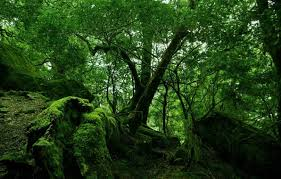

Кожен з нас вважає, що з нами не може трапитися нічого екстремального: поїзд не зійде з рейок, машина не зламається і не зупиниться в глухому лісі з пробитим колесом, а похід у ліс по гриби закінчиться вдало, ніхто не заблукає і стежка виведе прямо на дорогу. Але, на жаль, досить часто зустрічаються випадки, коли люди, відправившись до лісу, легко збивалися з дороги і, втративши орієнтування, не могли вийти з нього.

Якщо Ви потрапили в ліс, не маючи елементарних понять, знань і достатнього досвіду поведінки в таких ситуаціях, особливо в поодинці – це найгірший з варіантів розвитку подій. Чому? Тому що Ви не боєць спеціального підрозділу і не льотчик, яких роками навчають як вижити в найнесприятливіших умовах при наявності одних лише рук. Тому тверезо оцінюйте свої сили.
По-перше, потрібно відразу припинити рух. По-друге, потрібно заспокоїтися, не панікувати, бо Ваш психологічний стан, в певній мірі відіб'ється на Вашому фізичному стані. По-третє, необхідно спробувати відновити, звідки і як Ви йшли. Згадайте свої останні дії і спробуйте по своїх слідах повернутися назад. Якщо це важко, тоді найправильніше в такій ситуації – залишатися на тому ж місці, де і були, поки у Вас не буде чіткого плану дій. Безладні блукання по лісу тільки погіршать ваше становище.
Якщо Ви точно знаєте, що незабаром Вас почнуть шукати, тоді краще залишатися в передбачуваному районі пошуків. У разі, якщо не дозволяє місцевість, перейдіть на інше місце, при цьому залишаючи знаки (зарубки на деревах, шматки матерії, прив'язані до гілок, або ж складені у вигляді стрілок камені), які будуть вказувати напрямок Вашого подальшого руху.
Існує кілька способів зорієнтуватися в лісі, від яких буде залежати Ваше виживання: